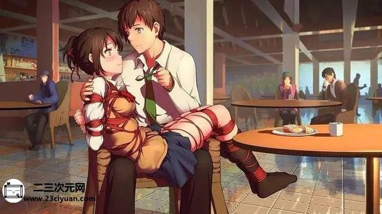
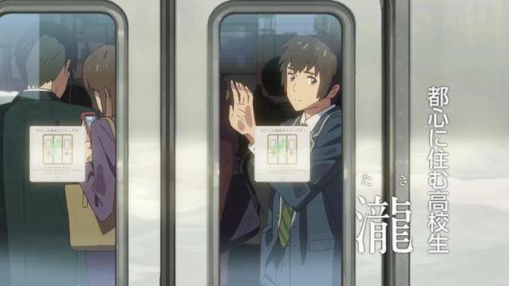
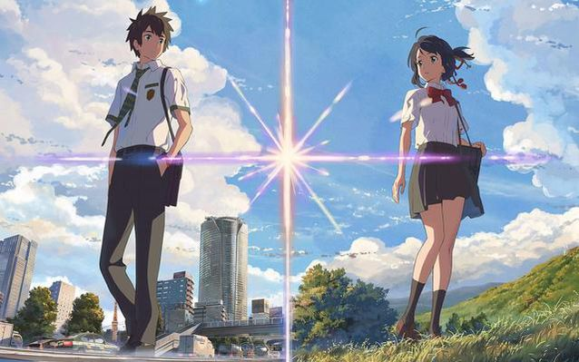
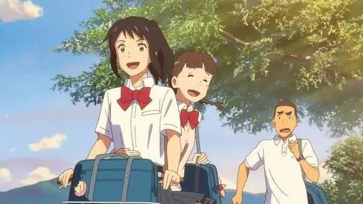
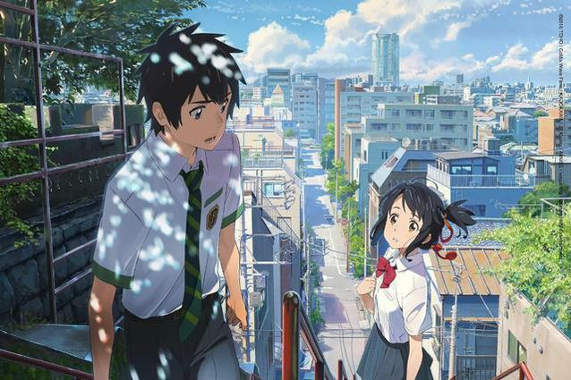
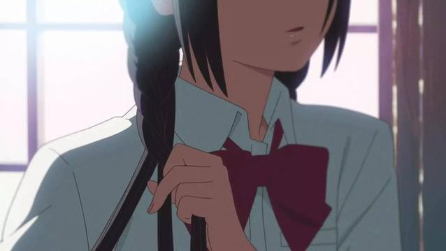

12月2号，天牛酱的朋友圈被一部电影刷屏了，而且这一刷屏现象绝不只是存在于天牛酱的朋友圈，连我那平常一直说“绝不会看这些动画片”的室友，今天回来对天牛酱说的第一句话都是问“《你的名字》到底是讲什么的啊？”这一现象实在是令天牛酱感到意外，要说为什么的话，就是这其中有很大一部分人天牛酱都不知道他们原来是有关注动漫的，这部叫做《你的名字》的动画电影，它来自二次元，来自我们最爱的那个宅圈，可这一次，阿宅们却不再被嘲讽幼稚和可笑，不管是宅圈还是非宅圈，都在晒票根。
可是当这样很多人在看着诚哥的电影时，天牛酱却表示心情复杂，怎么说，有点像小时候喜欢的那个毛绒娃娃，别人不注意时总想炫耀一下，可是当别人给予太多关注之后，天牛酱就只想把那个毛绒娃娃藏在被窝里不让人发现，有点像这样的感觉呢，不知道各位混宅圈的，是否会有同感？
以上只是天牛酱无聊的碎碎念而已，还是希望诚哥能够在中国大陆有一个好的票房的，毕竟，新海诚是天牛酱一个很喜欢的监督，他的每一部作品，天牛酱都会毫不犹豫去看，如果你问为什么要去看《你的名字》这部动画电影？非要用一句话来概括的话，“单单有新海诚这个名字就足够了”，对于天牛酱而言，新海诚就是这样子的存在，从很早之前就一直非常喜欢他的作品，如果因为这部作品然后让诚哥被更多人认识，如果你们也是同样很喜欢他的话，天牛酱会感到非常开心的。

毕竟诚哥自己也是这么说的，“我希望这部作品能和命运中的观众相遇。对于我来说是制作的一部电影，但要是能有多一个人能看到它，也算是我的工作有了价值。”《你的名字》在日本自8月26日上映至今，总票房已经将近200亿日元。
毫无疑问，这部电影在商业上取得了巨大的成功，现阶段的豆瓣评分是8.9分，好评如潮，新海诚从最初的独立动画，到之后的“壁纸狂魔”，到现在的“集大成之作”，让天牛酱不禁怒吼一句，“这是诚哥的胜利！！！”或许，这次《你的名字》的引进，将创造历史，而我们正是这个历史的参与者和见证者。

早在《你的名字》公布了PV之后，天牛酱就一直心心念念着这部作品，终于在九月份得到了所谓的资源，嗯，作为一名诚哥脑残粉，天牛酱第一时间看了，尽管知道这是不对的，但还是忍不住了，那个时候看完就超想写一篇文，最终还是没写，因为貌似有大陆会上映的消息，万一真的有了，还是要到电影院支持的，后来证明天牛酱还是很有先见之明的。
那么这部电影到底有什么这么值得看的呢？这部电影和新海诚以前的作品相比多了些什么呢？首先当然是说画面，每一帧都是新海诚！天牛酱接触的新海诚作品里最早的应该是《星之声》这部独立动画，这是新海诚一个人的动画，人物那个丑的啊简直不敢相信，因为诚哥手绘功底确实不太佳，由于年代稍久，在现在看来画质也不太好，但是整体画面还是可以从中看出新海诚风格的，那就是对于光影的独特处理方式，诚哥的光影也许不是真实的光影，但一定是看上去非常舒服的光影。

而后诚哥专注于CG动画领域，并摸索出属于自己的技法，再加上作图软件的后期处理，逐渐形成了“壁纸”模式，被贴上了“小清新”、“青春”等等标签，《秒五》、《云之彼端》、《言叶之庭》等都是这种类型的，还有尝试转型的，被很多人说在模仿宫崎骏的《追逐繁星的孩子》，关于这一部，天牛酱曾专门写了一篇文，来诉说自己对这一部的不喜欢，在经历了转型不太成功之后。
终于，《你的名字》来了，这一次，诚哥终于可以好好地讲一个动人的故事了。当然不是说诚哥之前的作品没有好故事，只是之前的新海诚，天牛酱看的是一种感觉，之所以之前能写《追逐繁星的孩子》的文，也是因为天牛酱有能力说它的故事，对于《秒五》这类的，天牛酱还真没办法写出什么感想，因为是一种很难描述的感觉。
画面一如既往，诚哥的独特文艺青春气息也丝毫不减，上次天牛酱在《追逐繁星的孩子》的那一篇说“新海诚把他喜欢的东西全放这里了，却没有带来新海诚的感觉”，这次，新海诚照样把他喜欢的东西全放在《你的名字》里了。除了固有的新海诚感觉，还带来从未有过的新海诚感觉，他喜欢的距离感，他喜欢的电车，他喜欢的自然景观，他喜欢的，都在这里啊(＞﹏＜)甚至连有些台词都略微相似，印象比较深的是，《星之声》里的“阿升，我，就在这里啊”，《云之彼端》里的“你在那里吗”，《你的名字》里的“泷在这里”，好啦好啦不管你们在哪里，你们都有在自己在的那里找到幸福就好了呢。
音乐方面，很多人都在刷《前前前世》这首歌，不过天牛酱最喜欢的是《梦灯笼》和《なんでもないや》这两首，在这部电影里，诚哥用了四首vocal（含人声）歌曲，而且这四首歌还是专门为这部作品创作的，所以在情节和情绪的推动和渲染上有很大帮助，天牛酱才不会说光看片头《梦灯笼》响起来的时候就已经有想要哭的感觉了。而且诚哥在《言叶之庭》和《你的名字》这两部里，都是根据音轨画分镜的，这让契合度再一次提高了。至于配音方面呢，据诚哥自己说的是，

“虽然我认为就是选声优或是选演员，但我并不会仅选一边。我追求的是哪一方更合适，或者能带给我意想不到的启发，因此这次就采用了演员阵容来饰演主角，而其他则靠声优来巩固的形式。”
男主角的配音神木隆之介是直接被指名的，如何把控好男生体内的女生部分将是看点之一，而女主角配音上白石萌音则是由选拔产生的，据说能让诚哥看到三叶的角色轮廓呢，特别有意思的是，香菜酱在出演了《言叶之庭》之后，在《你的名字》里再次担任老师这一角色，这个据说是诚哥给粉丝的惊喜，天牛酱就在此谢谢大佬了。
最后说故事本身，熟悉新海诚的人知道，这个故事换另外一个人来讲，肯定不会这么好看，因为故事本身也具有很浓烈的新海诚感觉，人与人之间的距离感，跨越时空的思念，美但有点凄的景物，一个单纯却不俗气的爱情故事，加入了时空，灾难和互换身体等比较科幻的元素，让这个爱情故事变得很新海诚，从少男少女们不起眼的相处，到最后的拯救世界，在没看这部作品之前，你很难想象它们之间是怎样联系和发展的，新海诚把一件很细小的事情加以修饰放大到世界和自然，这大概就是这个故事的魅力所在。
嘛，这个故事，天牛酱就擅自将它理解为好结局了，当然看法不同是很正常的，还看到有人说整个故事都是泷在山上自己做的梦，分析得有理有据呢。

用诚哥的一段访谈做结尾吧！
“我想做一部对我而言最大的作品，抱着这样的心情提交了企划书…结果，东宝方面给出的待遇渐渐提高了。他们看过了脚本和分镜之后决定做成现在这么大的规模，所以这点并不是我的功劳（笑）。因此我也没太在意这事，完全没有压力（笑）。
我对作品本身当然抱有很高的热情，说起我讲故事的能力，我感觉比其以前，我终于有了能从高处俯瞰整个故事、控制整个剧情的能力了，我感到从身体中涌出了自信，那是在正好两年前。因此企划书中满载着这种热情。
绝对要做出有趣的东西，耗尽自己现今为止拥有的东西就能做得有趣。自负也好自信也好，我倾注了这些东西做出了这部作品。我有这种感觉，也觉得本作成为了我的代表作。我强烈地感觉必须做出那种不知道我的名字的人也会看的作品。我也毫不犹豫的把过去作品中使用过的主题和情境之类放了进去。
因为存在本人最擅长的情境和叙事，我想尽力去利用它们。对不了解我的人来说，尽管本作中有我在10年前就做过的事，但现在看了依然能获得新鲜感。先不谈电影的叙事部分。本作的表现手法，以及音乐的使用方法，还有107分钟的时长的使用方法，我希望这些能给人以与我此前作品不同的新鲜感，并以此为目标努力了。”
所以就现在的结果看来，诚哥付出的努力确确实实得到了回报呢，恭喜新海诚，对于一个爱着新海诚的迷妹来说，这部作品，没毛病！

文/松墨天牛